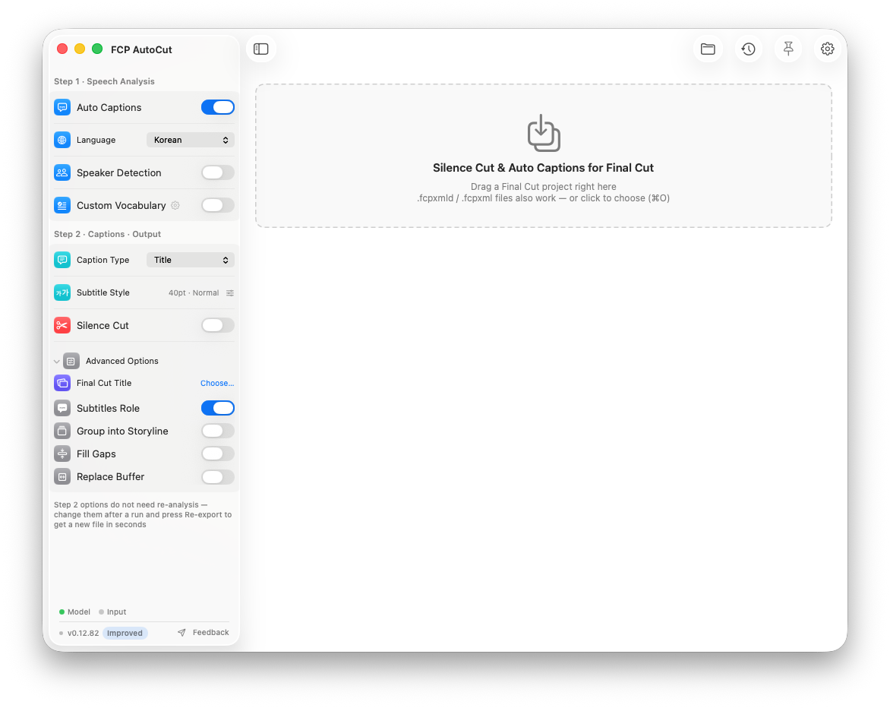
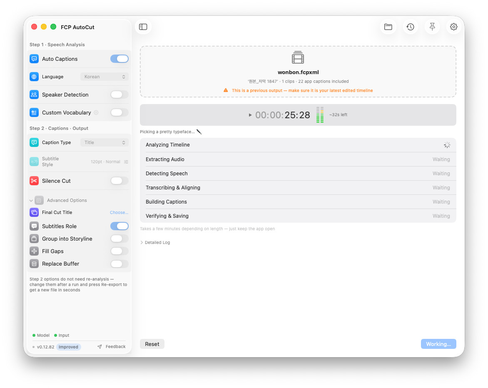
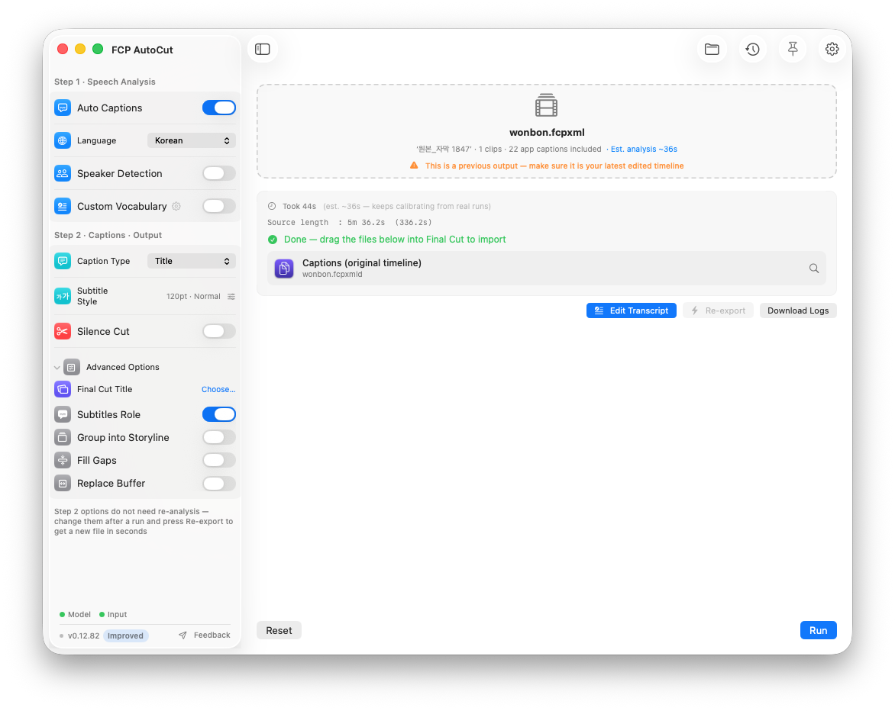
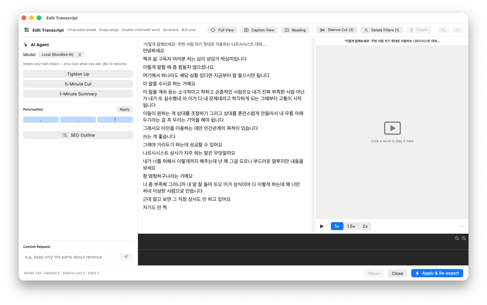
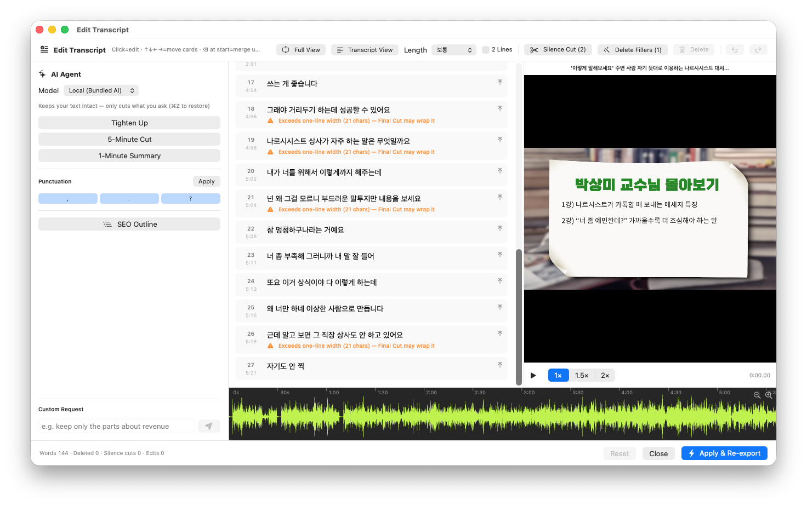
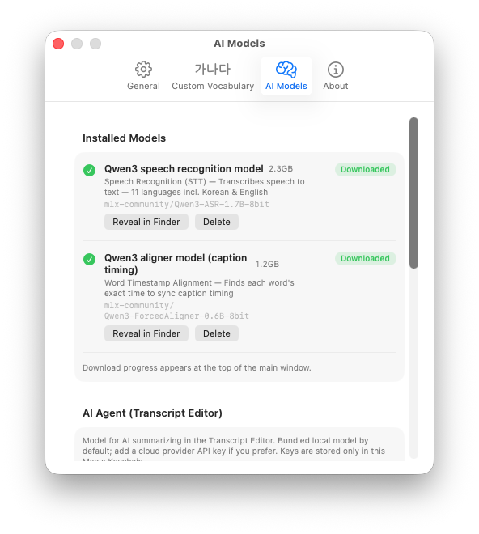
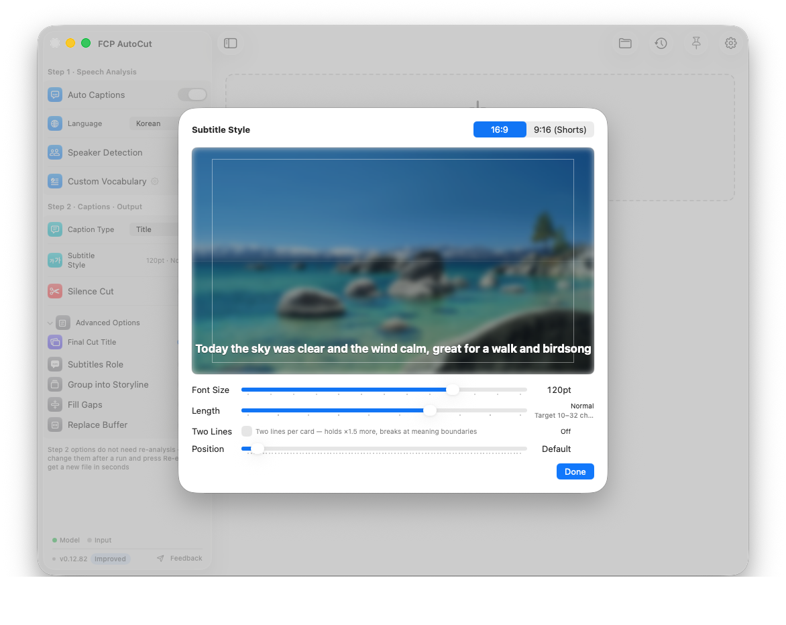
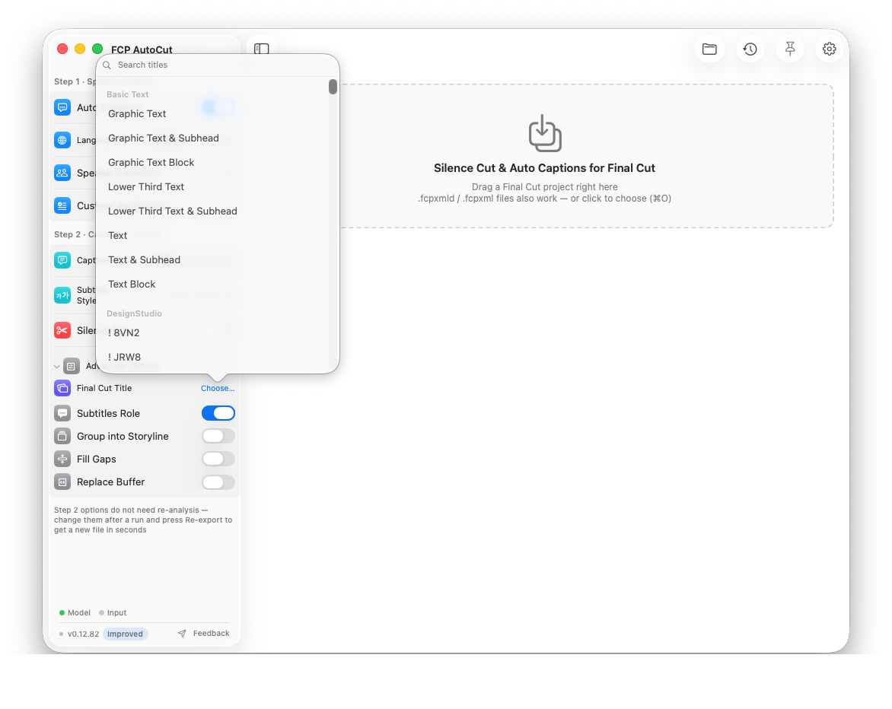
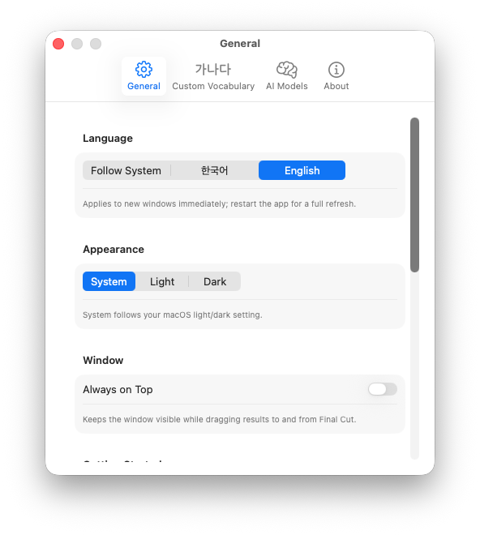
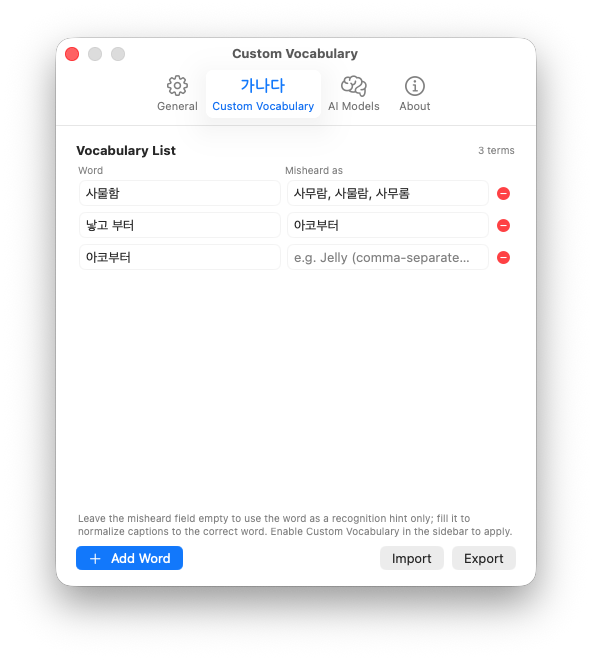

Drag your project in — FCP AutoCut removes silence, adds captions, and lets you edit the video as text, then hands it back to Final Cut Pro. Everything runs on your Mac. Your footage never leaves your machine.

Main window — pick your options in the sidebar (Step 1: speech analysis → Step 2: captions & output), then drop your project onto the dashed box. That's it.
Why FCP AutoCut
Other tools make you render the video or extract the audio before they can transcribe anything. FCP AutoCut deletes that entire step. Drag and drop the project you're editing and it analyzes the audio of your cut timeline directly — going straight from caption generation to Text-Based Editing.
Speech recognition, captions, editing, AI cleanup — all on-device. Your video and audio never leave your machine.
Results always come back as a new project. Adjustment layers, B-roll, connected storylines, and your cut structure are preserved.
Captions are generated as native FCP titles from the start — nothing to swap out, and nothing drifts on mixed frame rates.
Caption size and position in the app match Final Cut's actual render 1:1.
Features
Built for talk-heavy long-form — interviews, lectures, sermons, podcasts, YouTube. It takes over the hours you spent cutting silence and typing captions by hand.
Automatically finds and removes the gaps between phrases. Your original timeline stays untouched — you get a separate compressed version with the silence gone.

Local AI speech recognition (Qwen3-ASR) plus word-level forced alignment produces captions that stick to the speech.

Transcript Editor
When analysis finishes, the [Edit Transcript] button opens a window that feels like a word processor. Read the transcript, delete what you don't need, and that span is cut from the timeline. Every edit is undoable with ⌘Z.


It never rewrites your words — it only cuts what you ask, and every result can be reviewed and restored.

Subtitle Style & Titles


| Want more control? | What it does |
|---|---|
| Speaker diarization | Gives each speaker a different-colored role. Pin the speaker count to auto / 2 / 3 / 4 to prevent over-splitting. |
| High-precision diarization | For panels and interviews with crosstalk. An overlap-aware model (pyannote) separates even simultaneous speech per speaker. |
| Group into a storyline | Outputs caption titles as one connected storyline — easy to move and manage as a unit. Works on the silence-cut version too. |
| Proper-noun correction | Register names, brands, and jargon that ASR keeps getting wrong; captions are unified (Korean particles preserved). Review window · dictionary export/import. |

English · 한국어 — fully bilingual down to the logs; switch anytime in Settings

Proper-noun dictionary — the correct word plus the misheard variants
AI model management — inspect or remove installed local models
How to use
Grab your project in Final Cut Pro and drag it onto the app's dashed box
Turn on the options you want and hit Run. Progress and time remaining are shown
Drag the result file back into Final Cut → it imports as a new project (non-destructive)
Running — stage-by-stage progress with time remaining and a timecode clock
Done — drag the result straight into Final Cut. Re-export takes seconds, no re-analysis
Processed projects live in Job History (up to 50), with one-click access to each result folder.
Requirements
Open the DMG and drag the app to Applications — that's the install. After that, the "Update Now" button inside the app fetches every new version for you. Performance & privacy: all AI processing is on-device and works without a network connection.
The beta isn't Apple-notarized yet, so macOS blocks the very first launch. Allow it with the steps below — needed only once; after that it opens with a double-click.
Double-click FCP AutoCut in Applications → when the "can't be opened" alert appears, click Done (OK). This attempt is what makes the next step's button appear.
Go to System Settings → Privacy & Security, scroll down, and click Open Anyway next to "'FCP AutoCut' was blocked."
Enter your admin password (or Touch ID) and click Open. From then on it launches without any warning.
💡 This warning doesn't mean anything is wrong with the app — it's macOS's standard notice for betas that haven't gone through Apple's notarization yet. If you get stuck, open an issue and we'll help right away.
💬 Install help · bug reports · feature requests — GitHub Issues